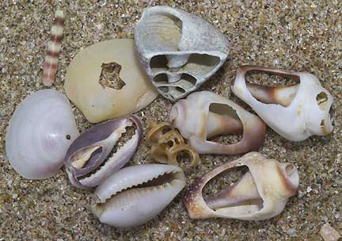

|
What
are snails?
Have you ever seen a snail? Yes, almost everyone knows what a snail
looks like. The familiar land snails that we see, however, are the
tip of the snail iceberg. Most snails are marine!
Snails belong to a group of animals called molluscs. Other molluscs
include clams, octopus, squids and cuttlefishes!
Shall we look at shells?
- Let's
see how many different kinds of shapes of snail shells we can
find! You can do this even with dead snail shells at high
tide. Or in a shelter during rainy weather or while waiting for
the tide to go down.
- The shapes
of snail shells tell us how they live. Can you guess from
the shape and texture of this snail how it lives?
- Smooth
shiny shells: cowries
have shiny shells because they cover the shell with their
body.
- Textured
shells: The tiny bumps on knobbly
periwinkles are believed to help keep it cool.
- Round
shells: Nerite
snails are hard to grip and bounce away from slippery
crab pincers to escape among the rocks.
- Spikes
may help deter predators: murex
snail, spider
conch
- The flared
lip of a conch
helps prevent it from flipping over as it hops
- Long
tips protect the siphon: spiral
melongena
- Did you
know some snails have hairy shells?! The hairy shell of a
living spiral
melongena traps sediments for camouflage. When it dies,
the hairs fall off and the bright orange shell is often taken
over by a hermit crab.
- There's
a big problem with a shell. It's got a big hole in it!
Let's see the different ways the snails deal with this
- Different
shapes of shell openings
- Shutting
the opening with a door.
Different kinds of doors and the advantage and disadvantage
of each type.
- Is
the door thick and hard? Prevent crabs from breaking through
or getting a grip on the door. (e.g., turban
snails)
- Or
thin and flexible? Can be retracted deep into a coiling
shell. (e.g., top
shell snails)
- Door
with a lock! Nerite
snails can lock their door shut!
- Shutting
the door and hanging on at the same time.
- At low
tide, periwinkles
attach the lip of the shell to the surface with mucus then
seal the shell opening tightly with a thin, horny operculum.
Don't pick periwinkles off a rock! Left unattached, they may
wash away when the tide comes in and they will die.
- Limpets
are snails with a conical shell (like a hat) and don't have
an operculum. Instead, they clamp down tightly against the
rock. Their grip is so strong that if you try to pry them
off, you will hurt them. So please don't do this.
- How
do you think this snail died? Broken
shells of dead snails tell stories of violent death.

- Top of
shell sliced off: probably by a crab
- Shell
has a hole: probably by another snail (e.g., moon
snail).
- Broken
shells also allows you to illustrate the internal structure
of a snail shell, how the animal can increase the size of
its shell without ever coming out of the shell!
Living
snails are fascinating!
- Let's
look at a living snail!
- See how
it moves! (If you can put it in a transparent container, you
can see the broad foot)
- How speedy
can snails get? Pretty fast if it's a whelk
going after the recent dead.
- Can a
snail hop? Yes it can if it's a conch.
- Buldozing
burrowers: see how the moon
snail uses its oversized body to plough through the wet
sand.
- It has
a pair of tentacles. Look also for the operculum. And other
special body parts.
- Some
have a very long siphon to sniff out food (e.g, whelks)
- Some
snails cover their shells with their body (e.g cowries,
moon snails)
- Some
snails don't move at all. Some mother
cowries stay over their eggs to protect them. Other snails
are tucked up inside their shells to avoid drying out at low
tide.
Snail
eggs
- What
do you think snails eggs look like?
This is a snail, meh?!
- Some common
snails that don't look like snails at first glance.
Snails
are important to the ecosystem
- Snails
are part of the food chain. Can
we think of some animals that might eat a snail? Some
charismatic animals to highlight: crabs, shorebirds.
- Snail
shells are very important to hermit crabs! Hermit
crabs have a soft backside and must insert this into an empty
shell or they will get eaten. So don't take any shells home, whether
the shell is pretty or ugly, complete or full of holes, big or
small. Each shell is a potential hermit crab home!
- Also, empty
shells eventually break down into calcium that baby snails need
to make their new homes.
Snails
and you
We all love to eat snails!
- Abalones
are not clams (Class Bivalvia), they are snails (Class Gastropoda).
- Do you
know where it comes from? How was it caught? Was it farmed?
- Do you
know what it eats? (Here is a good time to explain red
tide and other harmful algal blooms, etc and thus why they
shouldn't eat wild collected snails).
Can
I take this pretty snail shell home? Some
approaches to dealing with this:
- Shells
are important to hermit crabs. (see above)
- How
long do you think you will look at this snail shell when you get
home? One whole week? One whole day? Half a day? One hour?
Usually it's around an hour. Why don't you look at it while we
are on this walk and you can put it back at the end of the walk.
- Let's
take a photo of it instead. Especially to these visitor
reasons for collecting
- I want
to find out more abou the shell when I get home.
- My teacher
told me to collect shells for a school project.
Snail
myths to dispel
- Snails
never change shells.
Snails create the shell that they live in and never move out of
their shell while they are alive. They do not moult.
- You can
only remove a snail from its shell by killing it. All shells
sold as souvenirs are obtained by harvesting living snails and
killing them.
- Not all
snails are harmless. Some snails can kill. Cone snails can
kill very quickly. But they are quite rare on our shores. If you
are not sure, don't touch any snails or put them in your pockets.
|
Handling
tips
Where to find snails? Many are stuck onto hard surfaces
such as rocks, jetty pilings, sea walls. Often wedged in cracks,
under stones and other cool wet spots. Some are tiny. Many dig
into the sand or mud, others cling to seagrasses and seaweeds.
Be gentle! When overturning a rock to look at snails,
be gentle so as not to crush animals under the rock, and plants
living on top of the rock. Be sure to return the rock to exactly
the way you found it, and ensure the visitors also learn that
they should do this.
Don't disturb snails: Don't rip them off hard surfaces,
or dig them up from the ground. Try to point out features without
disturbing them.
Some mother snails like cowries, stay over their eggs. So don't
remove snails.
Don't pick periwinkles off a rock! At low tide, periwinkles
attach the lip of the shell to the surface with mucus then seal
the shell opening tightly with a thin, horny operculum. Left
unattached, they may wash away when the tide comes in and they
will die.
Don't kill live snails! Don't force out living snails.
Instead, use shells of dead snails (usually many can be found
washed up on the high shore) to illustrate any stories or concepts
you might have. If you leave a snail in a pool of water, it
will usually come out and go about it's usual business. Be sure
to put it back where you first found it.
Don't feed snails other marine life and don't feed snail
to other marine life.
Displaying snails in a container here's some important
points
Don't lose your snails. Most snails can crawl rapidly
out of a container. So make sure you don't 'lose' any snails.
And return them to where you found them after showing the snails
to the visitors.
Don't mix snails with other kinds of snails or marine
life. They might eat or poison one another. Many marine animals
secrete poisons that can kill especially in a confined space.
Be gentle when showing snail egg capsules and sand collars.
Explain that these contain living eggs and should not be damaged. |
|